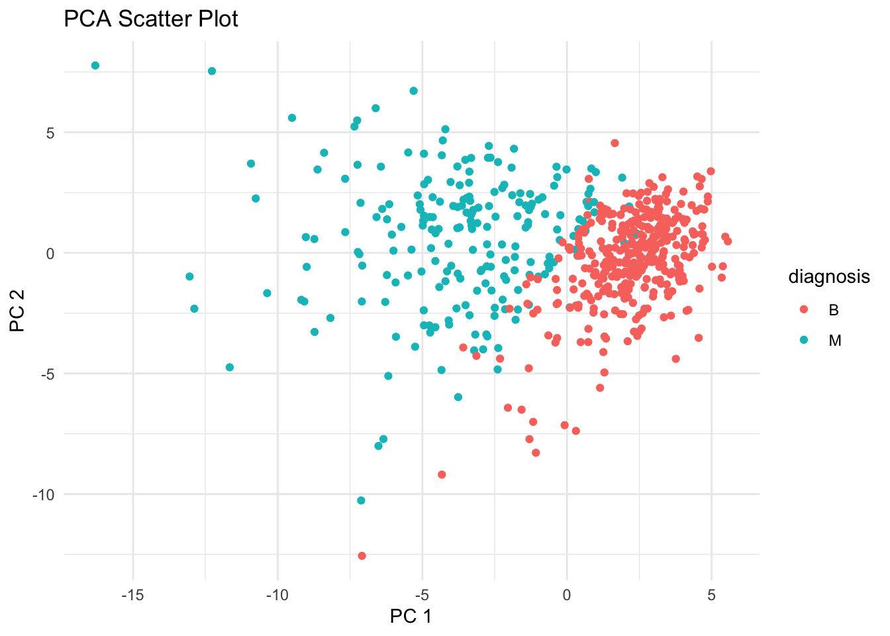
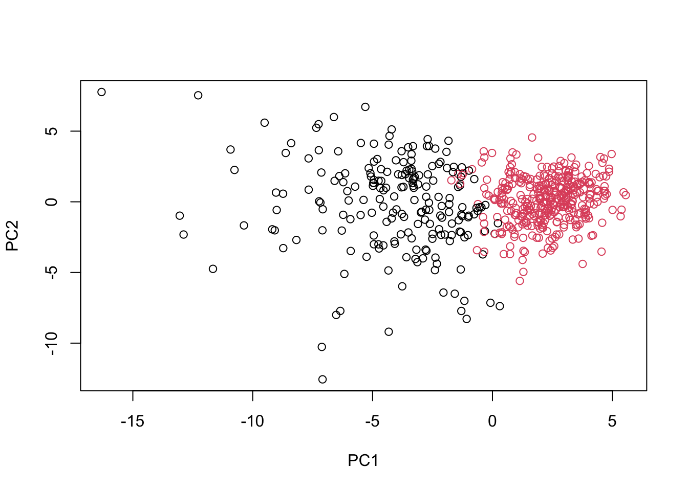
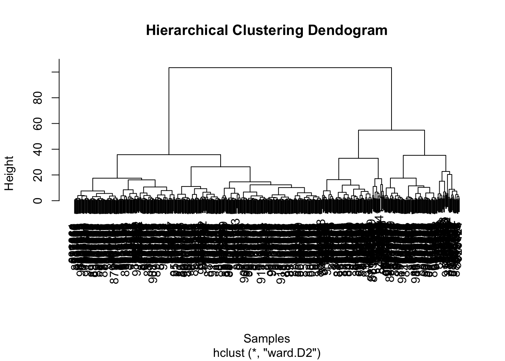

PCA practical issue: larger range and values in a column of the data set are given more importance, but we need to make sure each feature contributes equally to the —> do this with scaling inside prcomp()
mpg cyl disp hp drat wt qsec vs am gear carb
0 0 0 0 0 0 0 0 0 0 0
prcomp
function (x, ...)
UseMethod("prcomp")
<bytecode: 0x117c36188>
<environment: namespace:stats>
Using scale in prcomp usually passes values to the scale function - we always need to choose wether or not to scale data
1. Exploratory data analysis
# Save your input data file into your Project directoryfna.data <-"WisconsinCancer.csv"# Complete the following code to input the data and store as wisc.dfwisc.df <-read.csv(fna.data, row.names=1)
# We can use -1 here to remove the first columnwisc.data <- wisc.df[,-1]# Create diagnosis vector for later diagnosis <-as.factor(wisc.df[,1])diagnosis
[1] M M M M M M M M M M M M M M M M M M M B B B M M M M M M M M M M M M M M M
[38] B M M M M M M M M B M B B B B B M M B M M B B B B M B M M B B B B M B M M
[75] B M B M M B B B M M B M M M B B B M B B M M B B B M M B B B B M B B M B B
[112] B B B B B B M M M B M M B B B M M B M B M M B M M B B M B B M B B B B M B
[149] B B B B B B B B M B B B B M M B M B B M M B B M M B B B B M B B M M M B M
[186] B M B B B M B B M M B M M M M B M M M B M B M B B M B M M M M B B M M B B
[223] B M B B B B B M M B B M B B M M B M B B B B M B B B B B M B M M M M M M M
[260] M M M M M M M B B B B B B M B M B B M B B M B M M B B B B B B B B B B B B
[297] B M B B M B M B B B B B B B B B B B B B B M B B B M B M B B B B M M M B B
[334] B B M B M B M B B B M B B B B B B B M M M B B B B B B B B B B B M M B M M
[371] M B M M B B B B B M B B B B B M B B B M B B M M B B B B B B M B B B B B B
[408] B M B B B B B M B B M B B B B B B B B B B B B M B M M B M B B B B B M B B
[445] M B M B B M B M B B B B B B B B M M B B B B B B M B B B B B B B B B B M B
[482] B B B B B B M B M B B M B B B B B M M B M B M B B B B B M B B M B M B M M
[519] B B B M B B B B B B B B B B B M B M M B B B B B B B B B B B B B B B B B B
[556] B B B B B B B M M M M M M B
Levels: B M
QUESTION 1
Q1. How many observations are in this dataset?
nrow(wisc.df)
[1] 569
# 569 observations
QUESTION 2
Q2. How many of the observations have a malignant diagnosis?
sum(diagnosis=="M")
[1] 212
table(diagnosis)
diagnosis
B M
357 212
# 212 malignant
Remove first column ‘diagnosis’ from data frame, this is the asnwer we need to compare to our analysis result
# Use -1 here to remove the first columnwisc.data <- wisc.df[,-1]head(wisc.data)
Q5. How many principal components (PCs) are required to describe at least 70% of the original variance in the data?
# 3 PCs
QUESTION 6
Q6. How many principal components (PCs) are required to describe at least 90% of the original variance in the data?
# 7 PCs
QUESTION 7
Q7. What stands out to you about this plot? Is it easy or difficult to understand? Why?
biplot(wisc.pr)
# So difficult to understand, too many components on top of each other
# wisc.pr$x meaning??# Scatter plot observations by components 1 and 2plot(wisc.pr$x[,1], wisc.pr$x[,2], col=diagnosis , xlab ="PC1", ylab ="PC2")
QUESTION 8
Q8. Generate a similar plot for principal components 1 and 3. What do you notice about these plots?
# Scatter plot observations by components 1 and 2plot(wisc.pr$x[,1], wisc.pr$x[,3],col=diagnosis,xlab ="PC1", ylab ="PC3") #diagnosis shown by color
The PC axis are the most important axis for the data
PC1 is the axis with most variation, PC2 is the axis with second most variation, etc.
Find the middle of each PC axis and it is 0, then measure the points based on how far/close they are from it, this is the influence of the
ggplot
# Create a data.frame for ggplotdf <-as.data.frame(wisc.pr$x)df$diagnosis <- diagnosis# Load the ggplot2 packagelibrary(ggplot2)# Make a scatter plot colored by diagnosisggplot(df) +aes(PC1, PC2, col=diagnosis) +geom_point() +labs(title ="PCA Scatter Plot", x ="PC 1", y ="PC 2") +theme_minimal()

variance
# Calculate variance of each componentpr.var <- wisc.pr$sdev^2head(pr.var)
# Variance explained by each principal component: pvepve <- pr.var /sum(pr.var)# Plot variance explained for each principal componentplot(pve, xlab ="Principal Component", ylab ="Proportion of Variance Explained", ylim =c(0, 1), type ="o")
# Alternative scree plot of the same data, note data driven y-axisbarplot(pve, ylab ="Precent of Variance Explained",names.arg=paste0("PC",1:length(pve)), las=2, axes =FALSE)axis(2, at=pve, labels=round(pve,2)*100 )
## ggplot based graph#install.packages("factoextra")library(factoextra)
Welcome! Want to learn more? See two factoextra-related books at https://goo.gl/ve3WBa
fviz_eig(wisc.pr, addlabels =TRUE)
QUESTION 9
Q9. For the first principal component, what is the component of the loading vector (i.e. wisc.pr$rotation[,1]) for the feature concave.points_mean?
wisc.pr$rotation["concave.points_mean",1]
[1] -0.2608538
QUESTION 10
Q10. What is the minimum number of principal components required to explain 80% of the variance of the data?
# 5 PCs
QUESTION 11
Q11. Using the plot() and abline() functions, what is the height at which the clustering model has 4 clusters?
# Scale the wisc.data data using the "scale()" functiondata.scaled <-scale(wisc.data)# Get distance of datadata.dist <-dist(data.scaled)# Make hierarchy treewisc.hclust <-hclust(data.dist, method="complete")
Class walk through
# distance matrix from PCA resultd <-dist(wisc.pr$x[,1:3])hc <-hclust(d,method="ward.D2")plot(hc)
Cut the tree into 2 groups/branches/clusters
grps <-cutree(hc,k=2)
plot(wisc.pr$x,col=grps)

?ablineplot(hc, main ="Hierarchical Clustering Dendogram", xlab ="Samples", ylab ="Height")# Make line to get only 4 clustersabline(h=1800, col="red", lty=2)

QUESTION 12
Q12. Can you find a better cluster vs diagnoses match by cutting into a different number of clusters between 2 and 10?
QUESTION 13
Q13. Which method gives your favorite results for the same data.dist dataset? Explain your reasoning.
QUESTION 14
Q14. How well does k-means separate the two diagnoses? How does it compare to your hclust results?
table(diagnosis,grps)
grps
diagnosis 1 2
B 24 333
M 179 33
QUESTION 15
Q15. How well does the newly created model with four clusters separate out the two diagnoses?
QUESTION 16
Q16. How well do the k-means and hierarchical clustering models you created in previous sections (i.e. before PCA) do in terms of separating the diagnoses? Again, use the table() function to compare the output of each model (wisc.km$cluster and wisc.hclust.clusters) with the vector containing the actual diagnoses.
QUESTION 17
Q17. Which of your analysis procedures resulted in a clustering model with the best specificity? How about sensitivity?
QUESTION 18
Q18. Which of these new patients should we prioritize for follow up based on your results?